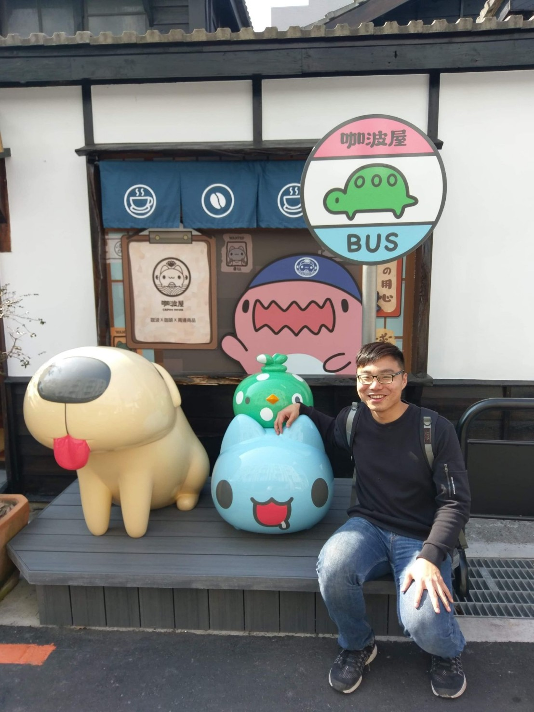

## 【關於我】
<div >
   
</div>
<div class="text-center mt-5 ">
  <h4><font face="Microsoft JhengHei">愛吃、愛玩、愛貓咪，目前是個剛畢業的餐飲管理系學生，正努力轉職成一位工程師!</font></h4>
</div>
## 【決定轉換跑道】
<font face="Microsoft JhengHei">
  <h5>
    在大學四年間不斷的累積工作經驗以及閱讀有關料理的書籍在工作的第4年覺得這份工作不太適合我，
    比起不斷做一樣的是如同機器一般自己更喜歡不斷創新、學習不同知識，
    在接觸程式後感到非常有興趣不斷的有新的東西要學也很符合自己的期望，也讓我決定要成為一位工程師。
  </h5>
</font>


